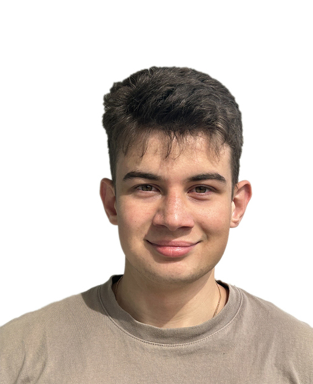

Záujmy: Šport, zvieratá, turistika, posilňovanie, priatelia, technológie, hry
Opis: Dávid je nadšenec aktívneho životného štýlu a vášnivý športovec, ktorý si užíva rôzne športy, ako je plávanie, posilňovanie a beh. Okrem športu má silný vzťah k zvieratám a často trávi čas s domácimi zviratami. Turistika je pre neho spôsob, ako sa spojiť s prírodou a relaxovať po náročnom týždni. Posilňovanie mu pomáha udržiavať si kondíciu a zdravý životný štýl. Rád sa stretáva s priateľmi, s ktorými zdieľa zážitky a spoločné aktivity. Je tiež technicky zdatný a rád sleduje novinky v technológii, pričom sa zaujíma o video hry, ktoré mu poskytujú zábavu a možnosť oddychu.
Opis: Daniel je aktívny športovec a nadšenec cyklistiky, ktorý rád trávi čas vonku a zlepšuje svoje športové schopnosti. Okrem toho sa venuje aj hrám, kde nachádza priestor na relax a zábavu. Miluje zvieratá a má blízky vzťah k prírode. Zaujíma sa o technológie a sleduje nové trendy, ktoré mu pomáhajú rozvíjať svoje záľuby a poznatky.

Meno: Vladyslav
Priezvisko: Khavan
Záujmy: Futbal, stolný tenis, programovanie, matematika
Opis: Vladyslav je nadšený programátor a pedagóg, ktorý s radosťou odovzdáva svoje vedomosti ďalej. Vo voľnom čase sa venuje športom, najmä futbalu a stolnému tenisu, ktoré ho učia tímovej spolupráci a presnosti. Programovanie a matematika sú jeho vášeň, kde neustále objavuje nové výzvy a logické súvislosti. So študentmi sa snaží zdieľať svoje skúsenosti a inšpirovať ich k tomu, aby neprestávali objavovať svet vedy a technológie.
Meno: Jakub
Priezvisko: Bajo
Záujmy: Programovanie, hry, cestovanie
Opis: Jakub je vášnivý programátor, ktorý rád trávi hodiny nad novými projektmi a vymýšľa kreatívne riešenia. Vo voľnom čase sa venuje hrám, najmä strategickým a logickým, ktoré mu pomáhajú rozvíjať logické myslenie. Cestovanie je jeho spôsob, ako si odpočinúť a načerpať inšpiráciu na ďalšie projekty. Najradšej cestuje do horských oblastí, kde si môže oddýchnuť od každodenného ruchu.